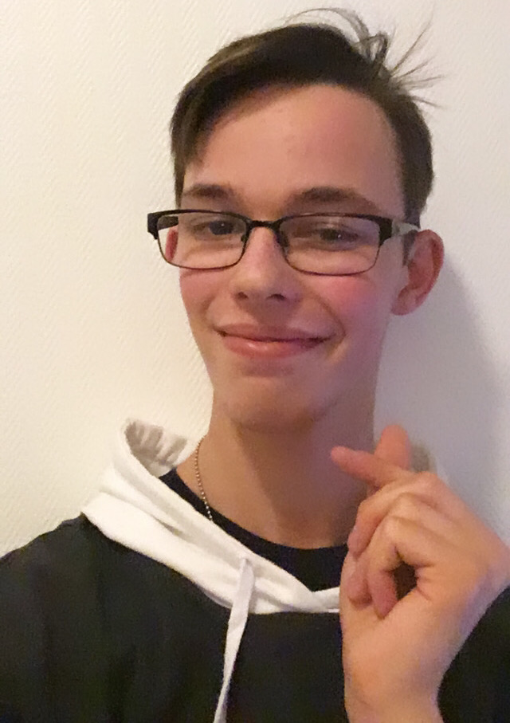

Erreur veuillez quitter ce site
Informations non disponibles
Données partiellement effacées
Site Web corrompu
Introduction
S'il l'on pouvait me décrire en un mot, mes proches me décriraient comme : EXTRAVAGANT
Bonjour mesdames et messieurs et bienvenue sur le site de toutes les merveilles. Ou plutôt mon site, mon tout premier site. ぼくのハジみサイトを。。 Soyez indulgeant. よろしくおねがいします。 ぼくのともだちをありがとうございます (ღ˘⌣˘ღ)
Expatriation
J'ai eu la chance de vivre plusieurs années à l'étranger avec ma famille. 3 ans à Istanbul (Turquie), de ma 4ème à ma 2nde, & 1 an à Alger (Algérie), pour ma Terminale. J'ai aimé chacune de ces expériences. J'ai pu faire de belles rencontres, découvrir de nouvelles cultures et même gôuter de nombreux plats. Vivre à l'étranger m'a permis d'acquérir de nombreuses qualités et m'a donné de merveilleux souvenirs. Les écoles étaient superbes, celle d'Istanbul était à côté du Bosphore et celle d'Alger était gigantesque. Les sorties possibles, les parcs, les bon petits plans de nourriture. Tout cela me met des étoiles pleins les yeux en y pensant ! Donc à chaque fois que l'on va à un endroit profitez à fond, à 10000%!
Ecriture
J'ai toujours aimé depuis que je suis enfant inventer des histoires, créer mon propre univers avec qui je veux dedans, les aventures que je souhaite. Ceci m'a toujours enchanté et il m'arrive encore de continuer à inventer des histoires ou des scénarios de tout genre à des moments parfois impromptus. Au début je ne pensais pas à les coucher sur le papier, je les vivais. Je ne m'en sentais pas vraiment capable, apte à faire ressortir toutes les émotions, les couleurs que je voyais et ressentais. Puis est venu un concours d'écriture d'une histoire de Noël à laquelle j'ai participé en 5ème. J'ai écrit une histoire qui me faisait plaisir et l'ai décorée de dessins en seulement une après-midi. Je m'amusais comme un petit fou. Et contre toute attente j'ai gagné le 2ème prix. Depuis j'ai été plus motivé à écrire mais cette motivation à des hauts et des bas. J'ai développé un monde pour une histoire que je souhaite écrire plus tard. Je m'y pris repris à 2 reprises. J'ai même écrit mon premier one shot dans cet univers en août dernier pour l'anniversaire de quelqu'un. En attendant que j'ai la possibilité de faire ce roman je continue à m'améliorer en étoffant l'univers et m'améliorant.
Pâtisserie
Je fais de la pâtisserie depuis la 4ème. J'ai commencé par les classiques gâteaux au chocolat aux meringues en passant par les charlottes aux fraises. J'adore faire des sucreries car cela me donne du plaisir. Partager quelque chose que l'on créé avec des personnes, leur donner un peu de bonheur dans leur journée et recevoir en échange un sourire avec un merci. Ceci est une vraie récompense qui est inestimable ! Je me suis même mis à faire des pâtisseries pour les anniversaires des personnes dont je suis proche. J'ai donc enchaîné des madeleines, gâteaux roulés / chocolat / vanille, chiffon cake au matcha. Et je peux vous dire qu'il y en a de la vaiselle à faire après chaque recette mais ça en vaut la peine. Je ne me lasse jamais d'en faire et j'ai toujours le sourire lorsque j'en fais pour les autres. Je m'améliore à chaque fois et je teste de nouvelles recttes ou même en innove certaines. Donc maintenant vous savez à qui vous adresser si vous penchez du côté sucré de la force !
Lecture
Je lis depuis aussi longtemps que je m'en souvienne. Si mes souvenirs sont bons mon premier livre a été un "Cabane Magique" rapidement suivi par "Harry Potter et l'éole des sorciers". J'ai toujours aimé des histoires fantastiques, de science-fiction, d'aventures. Tout ce qui pouvait m'enchanter, me faire frémir je le lisais. J'ai dévoré tous les ouvrages qui me passaient sous la main. Bien sûr mon goût de lecteur s'est développé encore avec les bandes dessinés dont ma favorite reste "Les Légendaires" puis les mangas que j'ai découvert vers mes 8 ans. Cependant comme leur lecture est un peu particlière je ne savais pas que je le lisais à l'envers xD. Maintenant je suis tombé sous le charme des dessins et des scénarios fabuleux des mangas et je ne peux passer une journée sans en lire ne serait-ce qu'une page. C'est une sorte de rituel quotidien que j'apprécie énormément. De même que mon rituel quotidien est d'aller chaque WE à le FNAC voir les nouveautés et craquer sur celles-ci.
Moony_rbw
Puisque que j'ai 3 hobbys / passions qui me tiennent à cœur je me demandais comment je pouvais les partager. Et c'est grâce à une personne rencontrée sur Instagram qui faisait des reviews de mangas et des citations que j'ai eu envie de me lancer dans cette "aventure" avec ses encouragements. Je me suis donc lancé en Janvier 2020. Certes je ne suis pas la personne la plus doué et je débute encore mais ça me fait tant sourire. Partager des passions, rencontrer des personnes, s'amuser. Je ne pouvais rêver de mieux comme expériene. Surtout que ceci me force à m'organiser pour les publications (enfin normalement *rire embarassé*) mais aussi foncer, tenter. Oser en quelque sorte d'essayer même si l'on n'est pas sûr que ceci marchera. Si vous voulez voir ce que cette personne un peu aventureuse que je suis fait, jettez un coup d'oeil. Abonnez-vous je rends (ﾉ´ヮ`)ﾉ*: ･ﾟ !

SKAM (FRANCE)
Je voudrais vous présenter une série que j'affectionne tout particulièrement. Cette série est l'adaptation d'une série norvégienne "SKAM". Je l'affectionne pour de nombreuses raisons et suis actuellement la saison 5 inédite en France. C'est une série de drame portant sur des jeunes adultes qui parlent de nombreux sujets tantôt tabous ou même éclipsés dans les discussions courantes (alcool, drogue, sexe, viol, homosexualité, transidentité, religion, handicap). Il n'y a aucun tabous dans cette série. Aussi chaque semaine des épisodes sortent à des heures précises (ex. 10:40 / 19:25) sur les plateformes pour rendre la série encore plus vivante. Ces minis épisodes d'1 à 5 minutes sont ensuite compilés dans des épisodes de 15-20 minutes le WE. De plus les personnages ont même un Instagram c'est pour dire à quel point le série devient personelle. Je l'ai découverte en Novembre 2019, avec l'adaptation française de la saison 3 et suis tombé sous le charme hypnotique de cette série. Je vous la recommande chaudement et ne peut que vous conseiller de vous poser tranquillement sur votre canapé avec des en-cas et boissons pour regarder l'adaptation française ainsi que la norvégienne, soit l'originale, ainsi que les autres adaptations (Italie, Espagne, Belgique, Allemagne, Etats-Unis). Et surtout, n'oubliez-pas "Eveything is Love". PS: Skam veut dire "honte" en norvégien. Bonne journée ;)
Mes sites